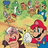

Above: French translation of SM64 'mistakenly' referring to Koopas as turtles. This is fixed in the 3D All-Stars release.
 |
Mario is Missing and Mario Discovery Series |
|---|---|
 |
Mario Multi-platform games, ports, and remakes |
 |
Various Mario Oddity articles *complete* |
|  | *NEWER*Additional Mario Oddity articles, updated regularly |